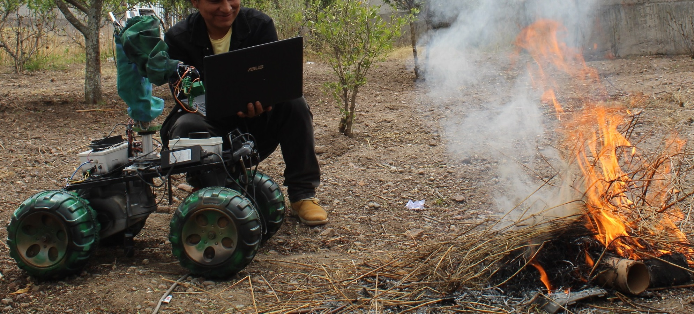

Robot Colaborativos de defensa y militar
En el presente espacio les presentamos los mejores Robot desarrollados por nuestra empresa Villa Automation S.A.C
En los sistemas de defensa y operaciones militares en nuestro país como Perú, los soldados y operarios están expuestos constantemente a altos niveles de riesgo en tareas como reconocimiento de terreno, desactivación de explosivos, transporte de material en zonas hostiles o vigilancia en tiempo real. El presente proyecto es modelar, desarrollar e implementar un prototipo de robot colaborativo con navegación autónoma, sensores avanzados y comunicación segura. asimismo, los modelos de control y fusión sensorial aplicados a entornos hostiles reduzcan el riesgo humano en operaciones críticas y apoyo en misiones de vigilancia y logística. Innovador: Introducción de la robótica colaborativa en defensa en el contexto peruano, con potencial de aplicación en otros sectores. Académico y Social: Generación de conocimientos, metodologías y capacidades locales en robótica avanzada. El modelamiento eléctrico y mecánico de los motores de tracción permitió representar con precisión el comportamiento dinámico del sistema. La respuesta simulada de velocidad, corriente y posición mostró una alta correlación con los resultados experimentales. El acoplamiento del sistema de tracción con el brazo robótico demostró un funcionamiento coordinado, permitiendo que el robot ejecute movimientos de aproximación y manipulación de objetos sin comprometer la estabilidad global. Este comportamiento evidencia la correcta distribución de pesos, el equilibrio de los actuadores y la eficiencia de la arquitectura de control distribuido. El proyecto Sentinel-XVA constituye una contribución significativa al desarrollo de robots colaborativos de aplicación militar y de defensa, integrando principios de automatización, control avanzado y diseño mecatrónico. Los resultados demuestran que la plataforma es capaz de operar de forma autónoma y estable bajo condiciones reales, consolidándose como una base experimental para futuras investigaciones orientadas a control predictivo, percepción inteligente y cooperación multi-robot.
- Movilidad autónoma (o semiautónoma) en entornos operativos.
- Brazo robótico con sensores y actuadores: permite manipulación,detección, carga y trabajo colaborativo.
- Inteligencia artificial que permite “aprender y optimizar desempeño conforme trabaja”.
- Sensores para detección de gases tóxicos, quimicos inflamables, calidad de aire, parametros climaticos en determinado medio y otros
- Sensores disponibles: LiDAR (especificar modelo/rango), cámaras RGB/IR, sensores ultrasónicos, IMU/GNSS.
- Interfaces de comunicación remota: Wi‑Fi, LTE/4G, LoRa, blothoo midiante nuestro app: villa automation:
- Aplicaciones militares/defensa y otras actividades
üì≤ Descargar en Google Play
Se diseña el robot colaborativo con múltiples grados de libertad, utilizando motores, servomotores para cada articulación y unos sensores para la detección de objetos e inspección. Se implementó un control predictivo que anticipa el error futuro y ajusta la posición de cada articulación para mejorar la precisión del movimiento.

El robot colaborativo Sentinel-XVA se encuentra en reposo y próximo al operador, luego se observa el brazo robótico articulado en posición de espera, con el efector final orientado hacia adelante. Luego el operador activa el sistema de control o cargar la misión mediante una interfaz (una computadora configura al sistema embarcado). En esta etapa, el sistema realiza: La inicialización de sensores (encoders, IMU, cámaras o sensores de proximidad). Luego la sincronización de los actuadores de tracción y articulaciones del brazo.

La calibración de posición base (homing) para definir el punto cero del manipulador. Se inicia la fase de preparación operacional del robot, asegurando condiciones de estabilidad y alineación de los ejes motrices antes del desplazamiento.

El robot se encuentra en movimiento hacia un punto de interés, mientras el operador monitorea su avance. Luego el brazo comienza a moverse simultáneamente, ajustando su orientación respecto al entorno, lo que indica una coordinación entre la locomoción y la manipulación. El sistema de control emplea un modelo cinemático acoplado, donde el movimiento del vehículo (plataforma diferencial o 4WD) y el del brazo se sincronizan para mantener el equilibrio y la orientación.

El robot alcanza el objetivo final (zona de trabajo, marcador o fuente de calor), asimismo el brazo se mantiene en posición fija, lo que indica el fin de la operación manipulativa o la verificación de una tarea completada (por ejemplo, inspección, reconocimiento o despliegue de instrumento). Los sistemas de control reducen gradualmente la tensión de los motores, logrando una parada estable sin sobreoscilaciones

El robot en esta escena mide temperatura y humedad con un sensor tipo DHT22. Si detecta condiciones de riesgo (por ejemplo, T° > 45°C o humedad < 30%), el brazo activa la pinza para “agarrar” o “retirar” el objeto peligroso Fig . Todo el proceso se visualiza en el Plotter Serial en tiempo real con: Posiciones del brazo (Hombro, Codo). Señales PID (U1, U2). Estado de la pinza. Temperatura y humedad. Curvas Hombro y Codo (rojo y azul): Las señales oscilan al inicio y luego se estabilizan, lo que indica que el control PID está corrigiendo el error de posición. Luego las pequeñas oscilaciones residuales son normales en sistemas simulados con ruido o desratización (Ts=0.1 s). Esto significa que el control logra estabilidad, pero todavía hay margen para afinar Kp, Ki, Kd si quieres una respuesta más suave.

El robot colaborativo tanbien se presento en la feria de ciencia y tecnologia de la Universidad Nacional san cristobal de Huamanga
Reconocimiento en el Evento de Ciencia y Tecnología del Ejército del Perú
Villa Automation EIRL tuvo el honor de participar en el Evento de Ciencia y Tecnología del Ejército del Perú, presentando nuestro Robot Colaborativo para Defensa y Aplicaciones Militares, una innovación desarrollada en el país y orientada a misiones tácticas, reconocimiento, apoyo logístico y asistencia en entornos de riesgo.La propuesta fue destacada por su aporte a la innovación nacional y su potencial uso en operaciones reales. Como resultado, recibimos un reconocimiento especial por parte del comité del evento, valorando el impacto tecnológico y el grado de desarrollo alcanzado. Este logro reafirma nuestro compromiso con:
- La investigación y desarrollo de soluciones tecnológicas para la defensa nacional
- La formación de talento joven en robótica e inteligencia artificial
- El fortalecimiento de la industria tecnológica peruana

Agradecemos al Ejército del Perú por el espacio brindado, así como a todos los asistentes que mostraron interés en nuestro proyecto. Seguiremos avanzando con tecnologías que aporten seguridad, eficiencia y soberanía tecnológica al país.

En el ámbito de la defensa moderna, los robots colaborativos se han convertido en una extensión indispensable de las capacidades humanas. Ya no se trata únicamente de máquinas que ejecutan órdenes, sino de sistemas inteligentes capaces de trabajar junto al personal militar, proteger vidas, reducir riesgos y multiplicar la eficiencia en operaciones críticas. En Villa Automation SAC entendemos que la tecnología destinada al sector defensa exige un nivel de precisión, confiabilidad y robustez que va más allá de lo convencional. Por ello, cada paso que damos, cada prototipo que construimos y cada avance que alcanzamos tiene como base un compromiso absoluto con la seguridad, la innovación y la excelencia técnica. La decisión de invertir en robots colaborativos no es una apuesta limitada al futuro: es una necesidad urgente del presente. Los escenarios actuales —ya sean zonas de riesgo, misiones tácticas, operaciones de reconocimiento o intervenciones en espacios hostiles— exigen herramientas que puedan acompañar al personal militar con resistencia, inteligencia y capacidad de respuesta inmediata. Un robot colaborativo bien diseñado es capaz de ingresar donde un soldado no puede hacerlo sin exponerse, de analizar información en tiempo real, de asistir en la toma de decisiones y de ejecutar tareas críticas sin interrupciones. Es, en esencia, un compañero que opera con la precisión de la ingeniería y el propósito de preservar la vida humana. Por esta razón seguimos invirtiendo de manera constante en el diseño, la electrónica, la mecánica y el software que dan vida a nuestros robots. Sabemos que cada sensor integrado, cada algoritmo optimizado, cada actuador calibrado y cada estructura reforzada no es solo una pieza tecnológica: es un eslabón más en la cadena de seguridad que entregamos a nuestros clientes. Entendemos que el sector defensa no puede trabajar con promesas, sino con resultados. Y resultados es lo que hemos demostrado a través de nuestros desarrollos, presentaciones y reconocimientos. Nuestros robots colaborativos están diseñados para adaptarse a los desafíos reales. Pueden desplazarse por terrenos hostiles, analizar entornos complejos, transportar cargas, apoyar en maniobras tácticas, proveer información crítica desde zonas inaccesibles, asistir en rescate, vigilar espacios, e incluso integrarse con sistemas de comando y control. Pero más allá de sus funciones, lo que verdaderamente nos impulsa es la certeza de que cada robot que construimos ayudará a un soldado a volver a casa, minimizará el riesgo en una operación o brindará una ventaja estratégica en situaciones donde cada segundo cuenta. Invertir en esta tecnología significa apostar por un Perú más seguro, más preparado y más independiente en capacidades tecnológicas. Sabemos que la soberanía nacional también se defiende con innovación, con ingeniería, con ciencia aplicada y con soluciones que nazcan desde nuestra propia industria. Por ello, en Villa Automation SAC entendemos que el camino hacia la autonomía tecnológica en defensa no se recorre con discursos, sino con proyectos reales, prototipos operativos, sistemas funcionales y mejoras continuas. Cada robot que desarrollamos es un paso más hacia ese objetivo. A nuestros clientes, instituciones aliadas y profesionales del sector defensa queremos transmitirles un mensaje claro: pueden confiar en nosotros. Pueden confiar en nuestra capacidad técnica, en nuestra disciplina, en nuestra visión estratégica y en nuestro compromiso con el país. No solo desarrollamos robots; desarrollamos sistemas confiables, probados y adaptados a las necesidades reales del entorno militar peruano. Cada prueba en campo, cada mejora implementada y cada validación obtenida son la evidencia de que no improvisamos: construimos con rigor, responsabilidad y propósito. Los robots colaborativos representan el puente entre la ingeniería y la seguridad, entre la innovación y la protección, entre la tecnología y la misión. Por eso seguiremos avanzando, investigando, mejorando y construyendo soluciones que no solo resuelvan problemas, sino que anticipen los desafíos del mañana. Porque en defensa, quedarse quieto es retroceder; y en Villa Automation SAC elegimos avanzar, crear, transformar y aportar. Sabemos que cada inversión realizada hoy será un beneficio para la seguridad del mañana. Y sabemos también que nuestra labor solo tiene sentido cuando nuestros clientes sienten la tranquilidad de que trabajan con un equipo dedicado, profesional y comprometido con su misión. Seguiremos perfeccionando cada sistema, ampliando nuestras capacidades, integrando nuevas tecnologías y elevando el nivel de nuestros robots colaborativos. Porque nuestra meta no es solo construir robots: es construir confianza, construir seguridad y construir futuro. Y ese futuro empieza con cada proyecto que aceptamos y cada compromiso que honramos. Villa Automation SAC está preparada para los desafíos del sector defensa, y nuestros clientes pueden estar seguros de que seguiremos trabajando con la misma pasión, responsabilidad y visión estratégica que nos caracteriza.
Desarrollo del Nuevo Robot Colaborativo Todo Terreno con Ruedas–Oruga Híbridas
En Villa Automation seguimos avanzando en el desarrollo de soluciones robóticas de alto rendimiento para aplicaciones en defensa, seguridad y operaciones en terrenos complejos. Actualmente trabajamos en una nueva versión de nuestro robot colaborativo táctico, diseñado especialmente para misiones en territorios accidentados, áreas con obstáculos y entornos donde se requiere movilidad extrema y alta estabilidad. La nueva plataforma incorpora un sistema híbrido de ruedas y orugas, que permite:

Operación fluida en suelos irregulares, arenosos, pedregosos o con lodo. Mayor tracción y estabilidad en pendientes y zonas de difícil acceso. Capacidad para superar obstáculos que limitan a robots convencionales. Reducción de vibraciones y mejor precisión en maniobras de exploración y rescate. Este diseño combina la velocidad de las ruedas con la firmeza de las orugas, brindando un desempeño táctico superior en ambientes exigentes. Este robot está orientado a operaciones donde la intervención humana es riesgosa o limitada, como: Reconocimiento y exploración en zonas inaccesibles. Misiones tácticas de seguridad. Apoyo en emergencias y respuesta rápida. Vigilancia autónoma en perímetros críticos. Exploración en entornos mineros o agrícolas avanzados. de igual manera ideal para aplicaciones civiles como exploración minera Su diseño robusto y su arquitectura modular permiten que cumpla operaciones críticas con alto nivel de fiabilidad.
otros videos en you tube similares:
Presupuesto de venta dependera la cantida de sensores y modulos
- Basico: 2000.0 $ (dolares)
- avanzado: 5000.0 $ (dolares)